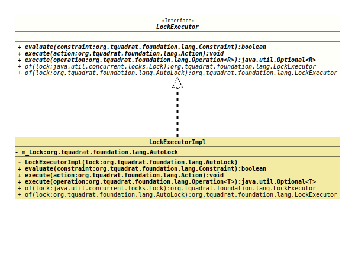

- All Known Implementing Classes:
LockExecutorImpl
@ClassVersion(sourceVersion="$Id: LockExecutor.java 995 2022-01-23 01:09:35Z tquadrat $")
@API(status=STABLE,
since="0.1.0")
public sealed interface LockExecutor
permits LockExecutorImpl
Allows to execute an operation with an obtained lock.
Use this class like below:
…
final var lock = new ReentrantLock();
final var executor = LockExecutor.of( lock );
…
executor.execute( () -> doSomething() );
…- Note:
-
- If your program is using
AutoLock, you should use the corresponding methods from there.
- If your program is using
- Author:
- Thomas Thrien (thomas.thrien@tquadrat.org)
- Version:
- $Id: LockExecutor.java 995 2022-01-23 01:09:35Z tquadrat $
- Since:
- 0.1.0
- UML Diagram
-

UML Diagram for "org.tquadrat.foundation.lang.LockExecutor"
{kind=link}
-
Method Summary
Modifier and TypeMethodDescriptionvoidExecutes the given action.<R> Optional<R>Executes the given operation.static LockExecutorCreates a newLockExecutorfrom the givenLockinstance.static LockExecutorCreates a newLockExecutorfrom the givenAutoLockinstance.
-
Method Details
-
execute
Executes the given action.- Parameters:
action- The action.- Throws:
AutoLock.ExecutionFailedException- The action failed for some reason.
-
execute
Executes the given operation.- Type Parameters:
R- The type of the operation's result.- Parameters:
operation- The operation.- Returns:
- An instance of
Optionalthat holds the result of the operation. - Throws:
AutoLock.ExecutionFailedException- The operation failed for some reason.
-
of
Creates a newLockExecutorfrom the givenLockinstance.- Parameters:
lock- The lock.- Returns:
- The new
LockExecutor.
-
of
Creates a newLockExecutorfrom the givenAutoLockinstance.- Parameters:
lock- The lock.- Returns:
- The new
LockExecutor.
-